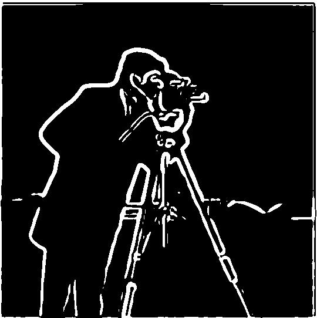
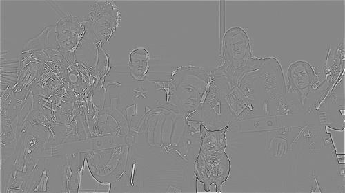
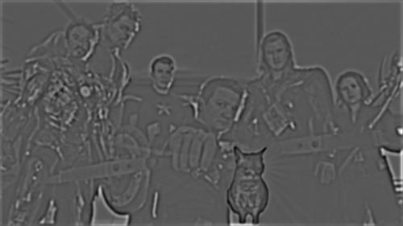

To begin, the cameraman image is convolved with both finite difference operators D_x and D_y.
The gradient magnitude is calculated by taking the magnitude, or norm, of these gradient components:
grad_mag = np.sqrt(dx**2 + dy**2). This gradient magnitude image is binarized with a selected
threshold, where values above the threshold qualify and are displayed as edges.
dx
dy
Gradient Magnitude
Binarized
Part 1.2: Derivative of Gaussian (DoG) Filter
Seeing that the edges detected above are rather noisy, the cameraman image can be blurred before performing
the process, as shown below. The differences that we see include the edges being thicker and smoother, as
well as less noise on the man, camera, and background.
Blurred cameraman image

dx
dy
Gradient Magnitude
Binarized
Blurring and computing the gradient magnitude can also be completed in a single convolution: by convolving
the blurring/gaussian filter with D_x and D_y, the resulting DoG filters can be directly
applied to the original cameraman image.
DoG filters: with respect to x on the left, y on the right
Gaussian dx
Gaussian dy
Gradient Magnitude
Binarized
Part 2.1: Image "Sharpening"
Images can be "sharpened" using the unsharp masking technique. This can be done in two ways:
Subtract the blurred image from the original and add alpha times of the remaining high
frequencies back to the original
Combine the above strategy into a single convolution operation called the unsharp mask filter
Below are results for different values of alpha, showing the progression of the original to
sharpened images.
Taj Mahal
alpha=1
alpha=2
alpha=4
Golden Gate Bridge
alpha=1
alpha=2
alpha=4
The following progression tries first blurring, then sharpening an image. The sharpened image
clearly loses a lot of the original's detail, is noisy, and contains artifacts.
Little Island, NY
Blurred
Sharpened (alpha=4)
Part 2.2: Hybrid Images
Hybrid images (are static images! that) change with the viewer's distance to the image. From the blending of
high frequencies of one image with low frequencies of another, the viewer sees the first image when
they are up close, and the second when they are far.
Nutmeg (High)
Derek (Low)
Nutmeg + Derek
Puppy (High)
Nugget (Low)
Puppy + Nugget
This is an example of a failure. Since the shapes of Eren's normal face and Eren's Titan face are different
sizes, it was difficult to align the two images (the final attempt tries to align the noses), resulting in a
less convincing hybrid image.
Titan (High)
Eren (Low)
Titan + Eren
The following also demonstrates a Fourier analysis. The two filtered versions of the input images keep the
respective high and low frequencies, which are then combined for the final hybrid image.
Young Eren (High)
Old Eren (Low)
Young + Old
Young Eren
Old Eren
Young Eren Filtered
Old Eren Filtered
Young + Old Filtered
Part 2.3: Gaussian and Laplacian Stacks
Before multi-resolution blending, Gaussian and Laplacian stacks are created. Gaussian stacks involve
repeatedly applying the Gaussian filter at each level of the stack, and Laplacian stacks involve subtracting
a level of the Gaussian stack from the previous level. However, the final level of the Laplacian matches the
final level of the Gaussian so that the original image can be reconstructed by collapsing the Laplacian
stack.
Stacks of an apple:
Gaussian stack of apple
Laplacian stack of apple
Stacks of an orange:
Gaussian stack of orange
Laplacian stack of orange
Part 2.4: Finite Difference Operator
To perform multi-resolution blending, each level of the Laplacian stacks across two images are blended
together. This blending works best with similar Gaussian blurring of a mask. The combined layers are
finally compressed into the blended image.
Combined Laplacian stacks to create oraple
Mario
Peach
Princess Mario
High-resolution blending of Mario and Princess Peach
The following blending example involves an irregular mask:
Irregular mask
Cat
Avengers
Angry Avengers


High-resolution blending of Angry Cat and Avengers